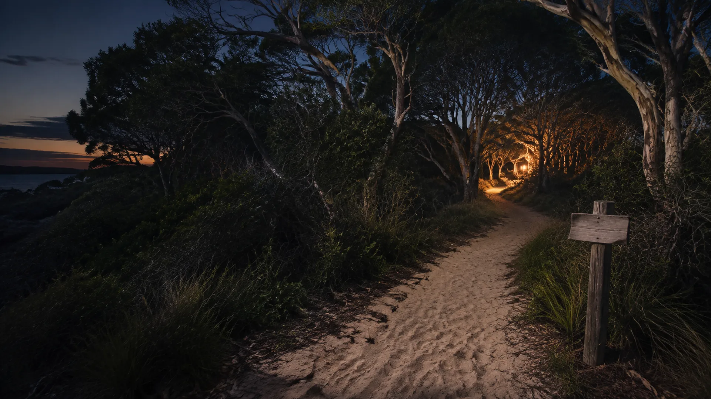

Skip to content
Minjerribah Site and Service Ideas
Public workbench and source trail
Menu
Home
7 Mile
Sand and Screen
9 Ballow Road
Men's camp
Women and children
Housing pathways
Aged care and longevity
82 Claytons Road
Organisation builder
Funding pathways
Related public work
Source trail
Site map

This path has wandered into the scrub.
The page may have moved. The main site map is waiting back at home.
Return home
Open the site map
Generated concept image
Previous
Source trail
Next
Home
↑